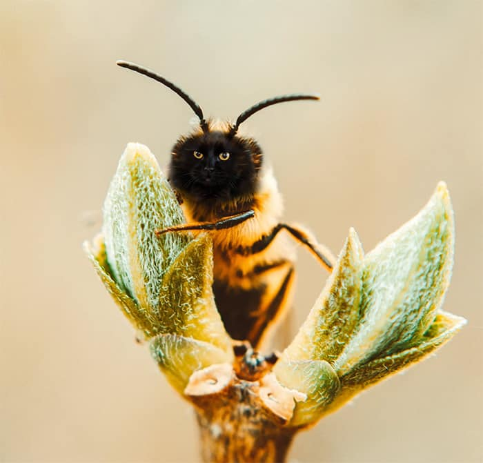
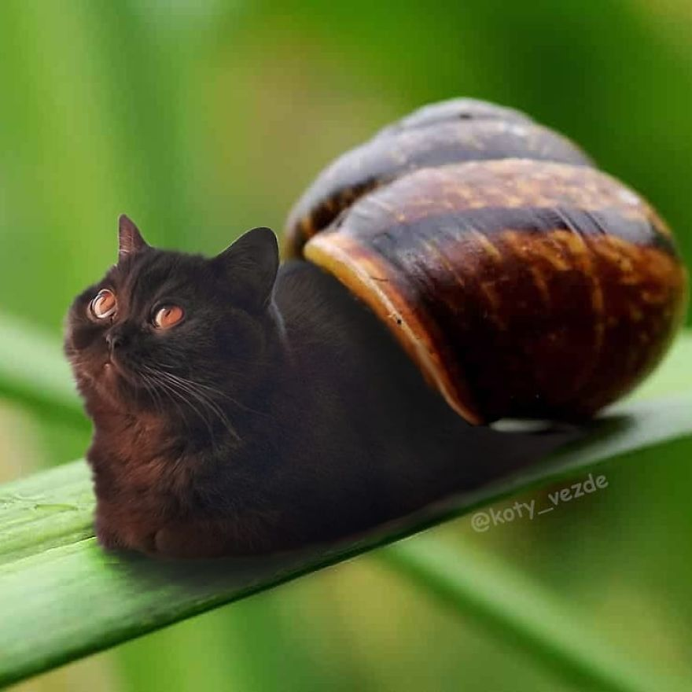
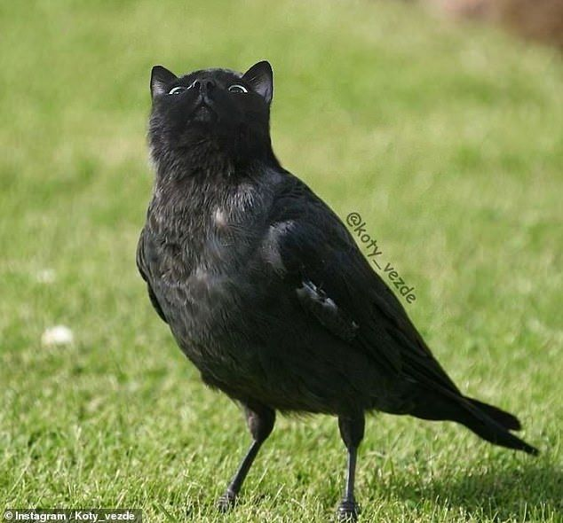
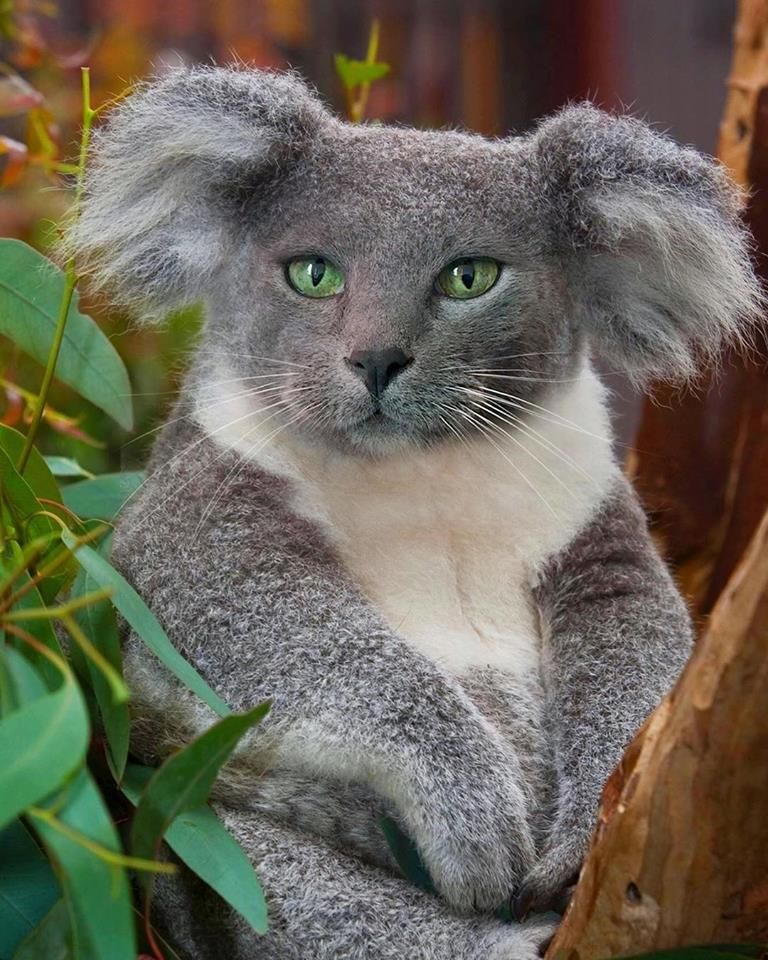
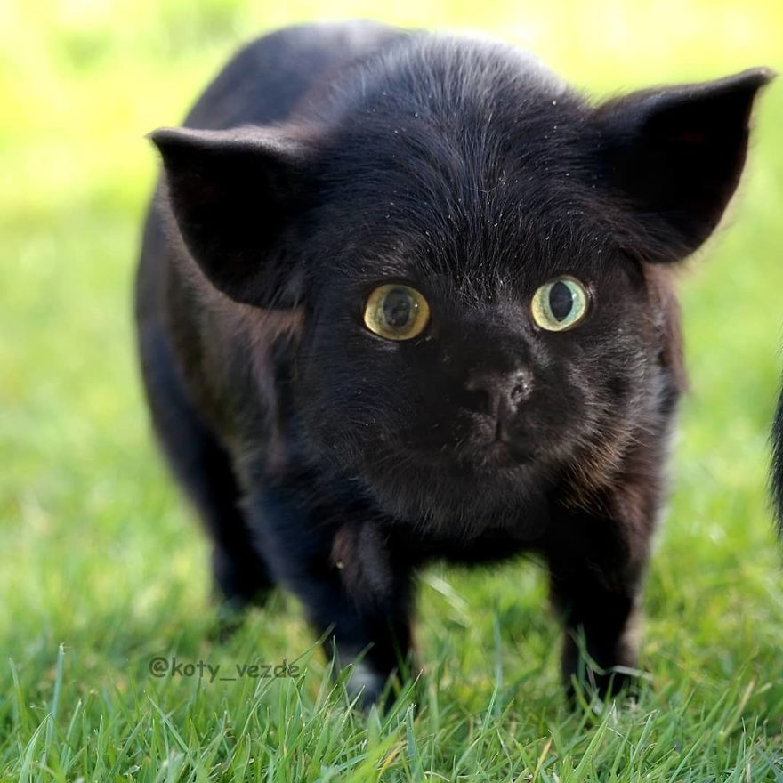

Om oss
Trondheim HEMA Club
I Trondheim HEMA er en HEMA-klubb som utøver den stadig voksende kampsporten HEMA (Historical European Martial Arts), som er en fellesbetegnelse for gamle kampsystemer av europeisk opprinnelse og som baserer seg på skriftlige skilder. Innenfor HEMA utøves en stor variasjon av kampsystemer, hovedsaklig med håndvåpen, der de største/mest populære er langsverd, rapier, sabel og sverd og buckler.
Vårt hovedfokus er langsverd, hvor vi har både nybegynner- og viderekommentreninger. I tillegg har en del medlemmer interesse i andre våpensystemer, deriblant montnante, sverd og buckler, dolk og sabel. Vi legger til rette for at medlemmer på enkelte treninger kan trene det de vil, og utforske nye ting!
Trondheim HEMA ble stiftet våren 2015, og har siden høsten det samme året holdt regelmessige treninger. Vi er en klubb som har hatt god vekst, og som forsetter å vokse fra år til år!
We focus our training on technique and sparring with each session having both
Hvor å finne oss
Vi trener i Trondheim Spektrum, hall E2 og har følgende treningstider:
Nybegynnere :
Sende oss en melding for å finne informasjon om når det starter
Tirsdag kl. 20.00 - 22.00
Viderekomne :
Tirsdag kl 20.00 - 22.00
Torsdag kl 20.00 - 22.00
Board Members

President - Peder Zwilgmeyer
Handles the infrastructure of the club and the structure of the training
Treasurer - Jon Åge Ward
Handles transaction through the club for buying equipment etc and how the money gets spent
Social Manager - Ivan Volokhan
Handles the social media, handles which pictures go and which one gets chosen, handles events and gathering outside of training
General Board Member - Didrik Rossbach
oldest board member, handles the training with Peder and is highly knowledgable about HEMA